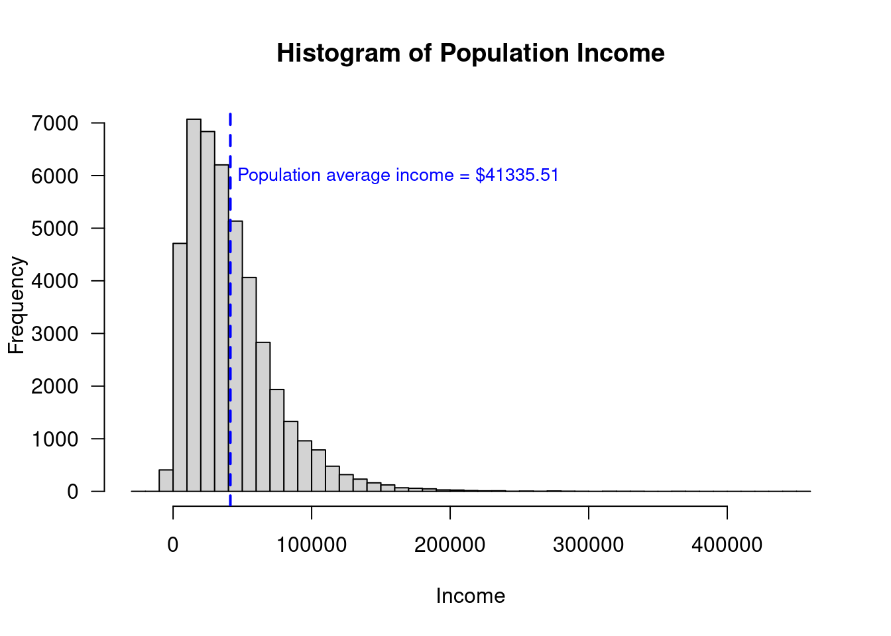
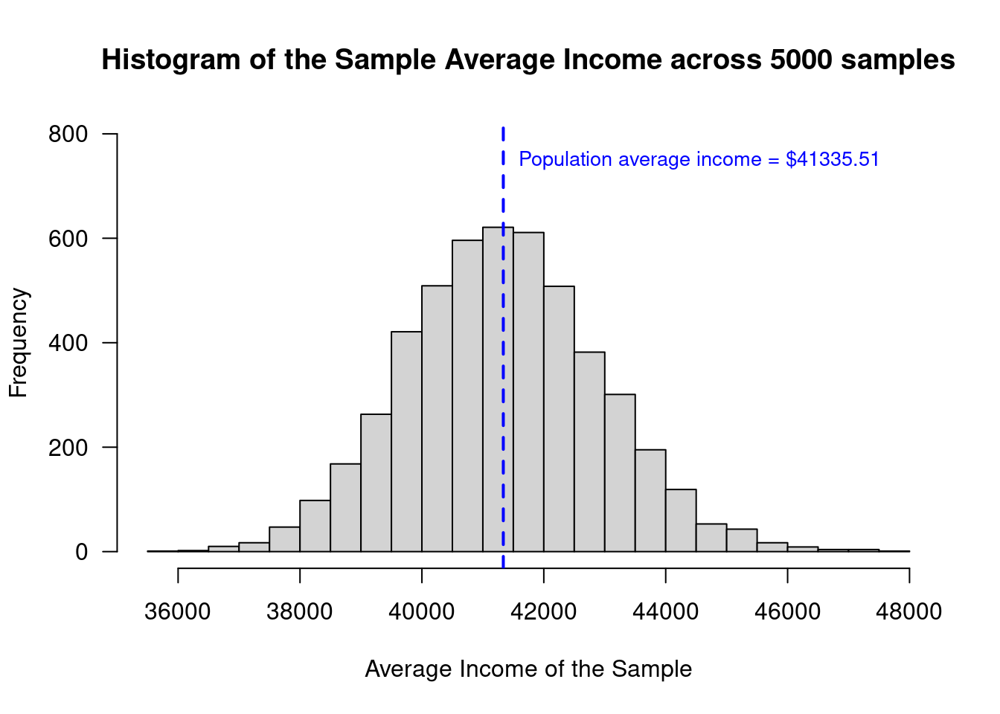
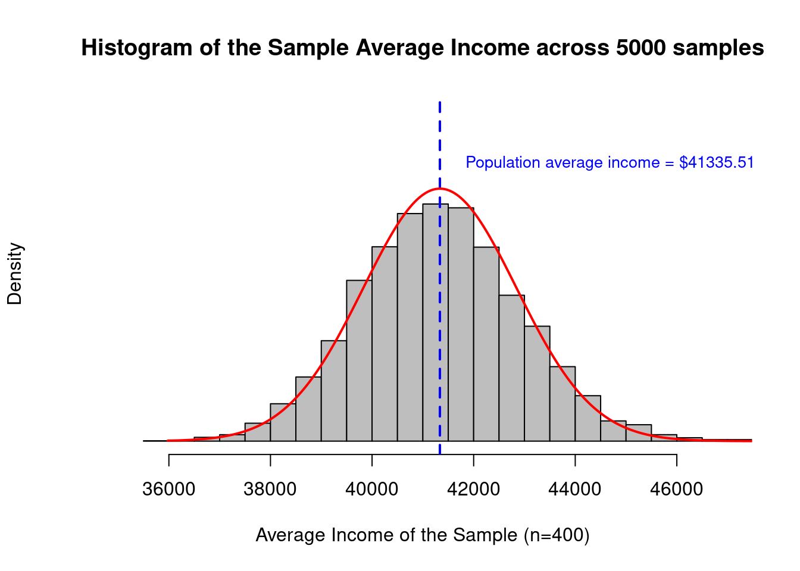

Learning objectives of this asynchronous lesson:
For this set of examples, I will use the Cyberville families data. Recall that this is a population dataset …
data <- read.table(url("https://publish.uwo.ca/~lhornic2/IveyStatistics/Datasets/families.txt"),
header = TRUE)
## suppress scientific notation for ease of reading numbers
options(scipen=99) Usually we can’t know the population statistics. But, because this dataset is a complete census of the Cyberville city, we can calculate the population average and population standard deviation.
We can use these measures to compare to the results we obtain from our sampling studies.
# Calculate the true population mean of Income
true.avg <- mean(data$INCOME)
# Calculate the true population standard deviation of Income
true.sd <- sd(data$INCOME)
print(cbind(true.avg, true.sd))> true.avg true.sd
> [1,] 41335.51 32037.62Note, that the actual population distribution of income is not normally distributed. It is right or positively skewed.
# Histogram of population income
hist(data$INCOME,
breaks = 40,
xlab = "Income",
main = "Histogram of Population Income",
las = 1 ) # orients the y-axis labels to read horizontally
abline(v=true.avg, # draw a line at the population mean
col = "blue",
lwd = 2, # lwd is the line width
lty = 2) # lty is dashed
text(x = true.avg + 5000,
y = 6000,
adj = 0, # positions the text box to the left of the coordinates
labels = paste0("Population average income = $", format(true.avg, nsmall = 2)),
col = "blue",
cex = 0.85) # cex is font size
If a researcher wanted to know about the population about Cyberville, performing a census would be expensive and and inefficient. It is also possible that it would be very difficult to actually achieve a complete census and the people who are most difficult to collect information from may have similar features For example, it is very difficult to capture homeless individuals in population census. If the census systematically misses a segment of the population, the census estimates will not represent true population statistics.
When conducting a sample, researchers spend time and effort sampling hard-to-reach demographics to ensure that they are correctly represented in the sample. When that is done, a sample average can be more accurate that a costly census estimate of the average.
However, a sample estimate will have uncertainty. One of the benefits of probability-based sampling methods is that the uncertainty can be characterized and quantified.
Probability-based sampling methods include
Many large population based studies and political polls use stratified random sampling. Challenges to stratified random sampling are discussed in several good articles about political polling in the 2016 US Election:
For today’s lesson, we will implement the simplest of these methods simple random sampling.
We will randomly sample 400 people for our study estimating average income.
n <- 400 # sample size
select.obs <- sample(1:nrow(data), n) # from a list of numbers (1, 2, 3, ... ), select n of them at random
# from the original data frame, name a new dataset only keeping the observations in the sample
study.data <- data[select.obs, ] With the sample data, we can calculate the average and standard deviation of the sample.
# Calculate the sample mean of Income
sample.avg <- mean(study.data$INCOME)
sample.avg> [1] 41767.11# Calculate the sample sd of Income
sample.sd <- sd(study.data$INCOME)
sample.sd> [1] 34366.29If you run the last two sections of code repeatedly, you will find that each time a new sample is selected the sample mean is a different number.
Of course, as a researcher, you would only ever see the one sample you actually get. But, we can explore the randomness of sampling by running a simulation in which we can repeat the study many times by taking different samples from the available population data in this case.
Let’s pretend to be able to do the study in which we randomly sample 400 people 5000 times.
M <- 5000 # number of times we will simulate running the study
n <- 400 # sample size
# initialize an empty vector to store the outcome of the study
sample.reps <- data.frame(avg = rep(NA, length = M), sd = rep(NA, length = M))
# using a loop, run the study many time, recording the average income each time
for (m in c(1:M)){
# from the data frame "data" randomly sample n observations, making a new dataset "study.data"
select.obs <- sample(1:nrow(data), n)
study.data <- data[select.obs, ]
# Calculate the sample mean of Income
sample.reps$avg[m] <- mean(study.data$INCOME)
sample.reps$sd[m] <- sd(study.data$INCOME)
}To visualize the distribution of the outcomes from simulating the sampling 1000 times, we can present a histogram of the sample mean and then draw a line where we know the actual population mean is.
# draw a histogram of the sample average income
hist(sample.reps$avg,
breaks = 20,
xlab = "Average Income of the Sample",
main = "Histogram of the Sample Average Income across 5000 samples",
ylim = c(0, 800),
las = 1 ) # orients the y-axis labels to read horizontally
abline(v=true.avg, # draw a line at the population mean
col = "blue",
lwd = 2, # lwd is the line width
lty = 2) # lty is dashed
text(x = true.avg + 250,
y = 750,
adj = 0, # positions the text box to the left of the coordinates
labels = paste0("Population average income = $", format(true.avg, nsmall = 2)),
col = "blue",
cex = 0.85) # cex is font size
This looks so Normally distributed!! Let’s overlay a Normal distribution on this graph to visualize how well it fits.

So, even though the underlying population distribution was not Normally distributed, the uncertainty in the sample average for income is Normally distributed.
The Central Limit Theorem is the formal mathematical statement of what you have just observed.
The CLT states that the distribution of uncertainty around the sample mean converges to the Normal distribution where the mean of the distribution is the sample mean and the standard deviation is the standard error.
The standard error is the special name given to the standard deviation representing the sampling uncertainty of an estimate. The calculation of the standard error requires knowing the population standard deviation. It is a special case when you don’t know the population average but you do know the population standard deviation. And, so, it is common to use the sample standard deviation as the best estimate of the population standard deviation.
\[ \text{SE} = \frac{SD}{\sqrt{n}} \]
Because the sample standard deviation is also an uncertain estimate, this increases uncertainty in the mean and changes the Normal distribution to a t distribution. When the sample size is relatively small (< 30 observations), this matters and you should be careful to use the t distribution. Generally, the Normal distribution is appropriate and reasonable to use directly.
The distribution converges to Normal faster when
Because of the Central Limit Theorem, estimating 95% confidence intervals around a sample average using the Normal distribution is both common and highly accurate when compared to exact or bootstrapped intervals.
The Central Limit Theorem tells us that that the uncertainty from sampling is Normally distributed around the sample mean where the standard deviation is the standard error.
Now, relying on the Normal distribution, we can calculate the 95% confidence interval for that first sample of 400.
# Recall our sample data was 'study.data'
# Calculate the sample mean of Income
sample.avg <- mean(study.data$INCOME)
# Calculate the sample sd of Income
sample.sd <- sd(study.data$INCOME)
# Calculate the standard error for the study where n = 400
se <- sample.sd / sqrt(n)
# Use the se and the Normal distribution to calculate the 95% CI
lowerCI = sample.avg + qnorm(0.025, mean = 0, sd = 1) * se
upperCI = sample.avg + qnorm(0.975, mean = 0, sd = 1) * se
print(cbind(sample.avg, lowerCI, upperCI))> sample.avg lowerCI upperCI
> [1,] 39557.78 36601.42 42514.13In plain language, there is a 95% chance that the true population mean is within the 95% confidence interval.
Looking back on our 5000 replications of the single study, we can see that this is true.
Specifically, we can identify how many of our 5000 studies were randomly such terrible samples that the 95% confidence interval did not contain the true population mean.
# Recall our dataframe from above holding the sample average and sample standard deviation from the 5000 replications
# We now add columns in which we will calculate the standard error and the lower and upper 95% CI
sample.reps$se <- sample.reps$sd / sqrt(n)
sample.reps$lowerCI <- sample.reps$avg + qnorm(0.025, mean = 0, sd = 1) * sample.reps$se
sample.reps$upperCI <- sample.reps$avg + qnorm(0.975, mean = 0, sd = 1) * sample.reps$se
# Next we will add a column to report whether the true population mean is *lower* than the lower CI or the true population mean is *higher* than the upper CI
sample.reps$outBounds <- 0 # initialize the column
sample.reps$outBounds[ true.avg < sample.reps$lowerCI ] <- 1
sample.reps$outBounds[ true.avg > sample.reps$upperCI ] <- 1
# what % of study replications reported 95% CI that did not include the true population average?
sum(sample.reps$outBounds)/m> [1] 0.0508I hope it is not too much of a surprise that this is really close to 5%!
Next: Elements of a Statistical Test